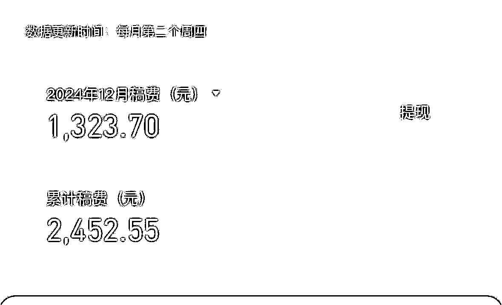
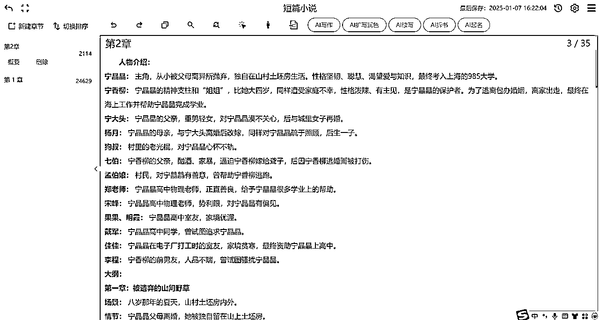

来源：https://shengcaiyoushu01.feishu.cn/docx/BeqOd1MtjoE04SxhkS3cs2S9n7e
内容出品人：盟主君
手册出品方：生财有术团队
出品时间：2025 年 1 月 21 日
建议：如果需要快速定位到精确内容，可以使用快捷键 Ctrl + F/command + F 的形式，搜索「关键字/词」，查找你想要的内容

市场大不大？：挺大的！这几年短篇写作市场就像坐火箭一样，蹭蹭蹭地往上涨。2024 年中国网络文学市场规模都快 400 亿了，而且这五年平均每年都在以 20%多的速度增长。
目前短篇小说平台三巨头是：知乎盐选、百度付费专栏、番茄小说。
为啥这么火？：现在大家生活节奏快，没时间看大部头，就喜欢短小精悍的故事，正好短篇写作满足了这个需求。再者，写短篇的门槛低，各种人都能来试试，大学生、上班族啥的都行，创作者多了，作品自然也多了。

读者想要啥？：简单来说，就是短、精、快。大家现在都忙，通勤路上、午休时间，就想看个几分钟就能看完的小故事，轻松又过瘾。
花钱买故事？：是的，现在很多人觉得好故事值得花钱。像知乎的“盐言故事”App，就是靠会员制收费，里面短篇故事都超过 10 万篇了，说明大家还是愿意为喜欢的内容掏腰包的。

谁在写短篇？：各种人都有！有文笔好的专业写手，也有待业中年人和暂时找不到工作的学生。就连一些长篇小说家也来凑热闹，转行写短篇。
怎么赚钱？：除了传统的稿费，现在还有好多赚钱的路子。比如付费阅读，读者得交钱才能看完整故事；还有广告分成，作品下面有广告，作者也能分到钱；版权运营也是个大头，好的短篇能改编成影视、漫画等，收益更是可观。一篇好短篇稿费能上万，创作周期短，回报快，吸引力十足。

竞争有多激烈？：很激烈！现在各大平台都在抢短篇写手，想方设法地满足市场需求，竞争就像打仗一样。
未来会怎样？：市场还会继续火下去，优质内容是关键。以后可能会有更多创新的创作和传播方式出现，比如借助 AI 技术可以让我们每个人都有可能成为“作家”，写出一款爆款作品。

我是从去年 10 月开始接触付费短篇写作的，那时候正好赶上百度百家号开放付费专栏权限，我就申请了一个百度百家的 mcn 机构开始做百家的付费短篇项目。
我们目前累计拥有 80 个百家号，以工作室的形式在运营，账号总收益能达到每月 3 到 5w 左右
12 月份开始，我们主攻各大小说平台的短篇小说市场，
如七猫小说网、番茄、奇妙小说等。均收获了不错的战绩，付费短篇小说的签约率达到 100%。
下面是 12 月份的番茄小说的稿费，目前测试的几个账号战绩还是很不错的！

这个问题是很多人关心的，但也是最难回答的。
比如我在 12 月份分别找了 3 个人同时跑了 AI 短篇项目
A 收益 3000+ （共发了 130 多篇）
B 收益 1100 （共发了 100 篇）
C 收益 1300 （发了 90 篇）
总的来说，爆文的概率还是以量取胜。
但是如果你能精修一篇文章，每天手工润色，打磨得非常好，那你这一篇收益可能就 3000+。
项目能挣多钱是取决于你投入时间和精力。

一定要写出虐点/爽点
✅经典套路：男主偏心女配，让女主去死，后来女主真的死了，男主却疯了
（这里我是以经典的都市情感小说为例）

第 0-2000 字：写出爆点
把高能亮出来，比如男主女配如何如何（暧昧/亲密）女主被女配欺负，男主却偏心女配，虐女主
第 2000-4000 字：拉情绪，末尾卡点女主死
比如：女主要死了，女配还在挑衅女主；男主陪着女配一起虐女主女主心灰意冷，死。
一定把情绪拉起来，怎么生气怎么来，中途要给点追妻火葬场的暗示，吸引读者。
第 4000-9000 字：高潮，后悔
这部分写男主的后悔（爱而不得）
男主发现自己爱的是女主，女主却已经死了
📒总结：
👉男主不信，以为是女主的把戏不放在心上，
👉男主知道女主死了，开始疯狂找女主；
👉男主发现处处都是女主深爱自己的痕迹，后悔不已女配继续作死，
👉被男主警告/报复/抛弃男主后悔想要弥补，于事无补，痛哭流涕
第 9000-10000 字：让读者解气
男主悲惨结局：把男主往死里写，怎么惨怎么来，疯狂虐男主，提高爽度。

整体节奏：拉仇恨（虐）+反转（女主死）+后悔
爆款小说要点：
✅让读者有充分的代入感。
✅要充分地把控情绪拉扯
✅一定要有创新点
✅不要过分套路化

要把大象装冰箱一共分三步，要写好爆款短篇小说也只需三步：
第一、在小说网找到合适的对标小说
第二、让 AI 分析小说，并形成新的小说大纲，再让 AI 把逐个章节写出来
第三、利用 AI 制作小说封面图，完成发布

我们可以在今日头条、知乎盐选等平台寻找优质的短篇故事，然后将小说下载到本地。
大家可以找一些点赞数比较高，时间比较久的故事，
这些故事一般都是有爆火因子的，所以我们复刻这些故事也会同样增加爆款的概率。
例如，我们找一篇现实情感的短篇，打开盐言故事 APP （知乎盐选小说平台）
寻找方向一：点击主页上方的分类，选择上方的“现实情感”分类，在这里找一些点赞数超过 1000 的文章
寻找方向二：还可以在首页的女频/男频找对应的文章，评论越正面越好。


获取方式一：知乎小说阅读网站：http://abcd7.top
（优点是不要钱；缺点是流程有些繁琐，需要下载夸克，然后每天需要下载指定文件来获取一个免费看书的码）
获取方式二：开通盐言故事会员 + 长截图 + 图片压缩 + OCR 识别
（优点是网站所有内容都可以获取到，缺点是要花点钱）
图片压缩：https://ai.danqingai.com/index/image/compressor.html
OCR 识别：https://ocr.wdku.net/

先使用 AI 写作网站，将原来的小说进行拆书分析，然后重新生成新的小说大纲
这里需要使用一些 AI 写作的网站

https://xingyuexiezuo.com/?inviter=11011#/register
（这个小说名字只是给自己看的，无所谓叫什么）
（因为是短篇小说，我们就不必分章节）
最好用的当然是【盟主君】，在这里搜索盟主君，
即可看到“【盟主君】短篇小说一键拆书并重新生成新的情节，短篇爆款神器”点击+号即可添加。
这套提示词是我根据上方的爆款小说分析方法所写的，所以自带爆款大纲属性。
（当然你也可以选择其他大神的提示词，但是输出的效果不一定有这个好）
【盟主君】短篇小说一键拆书并重新生成新的情节，短篇爆款神器
你可以把这个大纲复制到新建第二章里，然后再对第二章进行拆书
在这里你可以输入提示词，来确保生成效果，比如：基于这个大纲，请把每一章的情节再细化，方便接下来创作
这样就可以让 AI 反复为你修改大纲了
最后把生成好的大纲保存在新的 TXT 文本中。

根据刚才生成的 TXT 大纲内容 ，让 AI 写出每一章的具体内容。
这里有两种写小说的方法，一种是使用 windsurf 来写，另一种是继续使用星月写作来写

首先登录官网 https://codeium.com/ 下载并安装 windsurf

在桌面建立一个文件夹，里面分别存放原文和成品
原文就是我们找到的对标小说，成品就是 AI 生成的小说
举例：
我们把对标小说 169.txt 和 169 大纲。txt 放在小说原文的文件夹中，方便以后利用软件调用。

点击左上角的文件打开“短篇”文件夹即可，这样我们就可以在 windsurf 对这个文件夹进行编辑操作了
在右侧 AI 对话，选择 Claude 3.5 模型，这个模型目前写的小说效果最好
可以直接@放在小说原文 ，
这样 AI 就可以阅读并理解原文写的什么内容，是什么风格，这样跟更有利于准确生成新的文章。（这个非常重要）
提示词如下
请你仔细阅读小说原文 @ [小说原文。txt]和小说新大纲@[小说新大纲。txt]
现在请你写出第 1 章（填写数字），用第一人称写，要求如下：
（本章节大纲）（创建以小说名字为命名的新文本，请放在成品文件夹内）
这里注意以下这些点，
输入完整的提示词后，点击回车，AI 就会给你迅速写出本章内容，只要我们重复该步骤把其他章节写出来即可
所有章节生成后，使用以下提示词，我们再生成一段精彩的导语放在小说开头
提示词如下：
请你参考原文导语，写一个类似的精彩导语，引起读者阅读兴趣 ，有悬念， 100 字以内，以对话及心理活动为主。并放入到第一章前面，请提炼全文最精彩的情节，引发读者读下去。用精彩的对话形式来呈现，要有强烈的冲击力。
生成的效果如下
最后我们让 AI 为我们生成两个小说标题
番茄小说平台需要长短两个标题，用 AI 为我写出来
30 字的长标题 提示词如下
现在你是一个顶级的作家，擅长为短篇小说起标题，要求准确概括小说内容，引起读者阅读兴趣，符合知乎网文风格，利用三段式标题法概括全文引起悬念，请你根据以上小说内容起 5 个标题。
输出是结果如下，我们可以填一个
15 字的短标题 提示词如下
再把标题精简至 15 个字，要求有悬念，吸引点击，有爽点，符合热门知乎小说的标题特点。写出 5 个标题
最后将整个小时的内容和标题复制到小说平台后，要进行修订，保证小说阅读起来没有逻辑性错误，最后完成发布

https://xingyuexiezuo.com/?inviter=11011#/register
点击注册，然后选择充值，选择兑换套餐，输入 AI 联盟 666 即可免费领取 30000 字
把之前写好的大纲复制到新建的章节内

选中大纲的章节，例如第一章，然后选择上方的 AI 扩写润色
在右侧选项卡中选择扩写的提示词，如我选择的是盟主君的提示词，
如果是短篇小说，其他选项可以忽略不写，最后点击生成。
如果不满意效果，可以重新生成新的内容；如果满意点击替换即可把大纲替换成新生成的内容
你也可以把第一章写好的内容放在新建的章节中，继续写第二章，复制第二章的大纲，然后点击扩写润色。
在这里的请注意保持与前文连贯性，你要在大纲后面加一些提示词。
另外为了更好的让 AI 理解前文，你需要关联前文的内容，这样就确保章节连贯性了
按此方法，把大纲其他章节逐步写出来，然后都放在第二章内，这样每次扩写润色时候都自动关联第二章的全部内容了

https://jimeng.jianying.com/
提示词如下：
小说封面 + 小说主人公形象+ 小说标题文字“”
反复抽卡，直到我们在生成的图片选择一张适合的来做小说封面

https://fanqienovel.com/main/writer/home
在下方上传封面（下一节教你怎么做封面），填写推荐标题，选择作品分类，填好这些即可发布

https://www.qimao.com/

https://www.gushi.cn/

目前每个平台都需要实名认证，且没有发文数量限制。
如果你是新手只需要注册多个平台账号，一文多发，实现一鱼多吃即可。
如果你是新手建议每天抽出 4 个小时，创作 5 篇文章，这样有助于前期以量取胜，获得更多流量保障
如果你的时间充足可以增加到每天 10 篇。

目前比较稳定的且适合新手操作的就是番茄平台。
平台没有任何门槛，只要文章达到 6000 字，没有太大的问题都可以自动签约。
只要签约就可以收到广告流量分成，也就是所谓的稿费。
目前番茄的流量稿费属于盲盒状态，每个作者，甚至每个文章的流量单价都不一样，
这还是取决于内容质量和展示的广告的单价，因为收益是作者与平台五五分成。
万人阅读单价也在 50 到 150 之间。
另外番茄每个月都会有短篇活动，如果阅读量多，可以入选活动，一般奖金在 500 到 3000 左右。
番茄小说稿费，每月第二个周二显示上个月的收益。可以 【番茄作家助手】APP 直接提现
超过 800 的部分会扣 20%的个人所得税，这个所得税每年是可以参与退税的。

目前每个月的使用成本是 200～400 元，
主要是开通上述两个工具的会员，windsurf 的 60 美金/月，星月 199 元/月。

在使用大纲生成对应章节时候，会出现不同章节不连贯的问题。
那么可以在大纲的末尾添加一句提示词：
保证这章开头情节与上一章自然连贯。
（这里的提示词不唯一，大家可以给 AI 提各种要求，来提高输出的效果）
另外 AI 生成的内容末尾会莫名出现一些总结性话语或者与大纲情节不相符的内容，你只需要删减这些内容即可。
目前我们一篇文章 70%靠 AI 生成，30%靠人工修改润色。

如果使用同一套提示词，AI 所创作的内容风格是一致的。
那么我们就需要不断修改提示词内容，按照自己的写作风格来修改。
另外在星月平台可以选择不同的扩写提示词，这样就确保避免风格相似的问题了。

首先，AI 是提高生产力工具，人是核心竞争力。AI 拆解的文章大纲不一定一次性成型，你需要反复优化调整，适当增加一些精彩情节。你可以针对一个大纲反复与 AI 进行多轮对话，以保证调整到最满意的大纲。
其次，要写好导语和前三个章节内容，把冲突、精彩情节前置，可以参考第二章的内容。
最后，每天多读一些对标文章，经过一周你自己就能总结出爆文开头的写作的风格了，你再按照这个风格修改 AI 写的文章，达到爆文的基础条件。
以上就是全部内容啦，这个项目收益整体取决于投入的时间和精力，感兴趣的可以下场实操试试，预祝篇篇爆款～